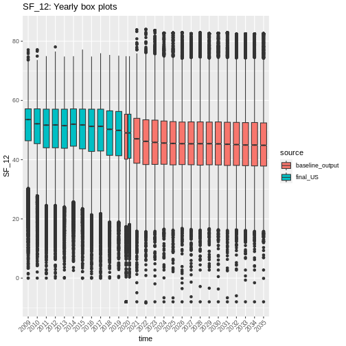

Mental Well-Being
Mental wellbeing is one of the key output of MINOS.
To measure mental wellbeing, we use the Short-Form 12 Mental Component
Score (SF-12 MCS). The Short-Form 12 survey is a survey consisting of 12
questions relating to both physical and mental health. See
here
for a copy of the survey. Summary scores for both mental and physical
health can be calculated from the responses, leading to the Mental
Component Score (MCS). MCS is a measure ranging from 0 (low functioning)
to 100 (high functioning). SF-12 MCS is represented by a variable
directly from the survey -
`sf12mcs_dv <https://www.understandingsociety.ac.uk/documentation/mainstage/variables/sf12mcs_dv/>`__.
Each of the responses to the 12 questions are also available in the
survey.
continuous_density(obs)

Fig. 6 plot of chunk unnamed-chunk-1
Transition Model
We use a Linear Mixed Model (LMM) from the lme4 package in R.
Formula:
print(summary(model))
## Linear mixed model fit by REML ['lmerMod']
## Formula: SF_12 ~ time + scale(SF_12_last) + scale(age) + factor(sex) +
## relevel(factor(ethnicity), ref = "WBI") + relevel(factor(region),
## ref = "Scotland") + relevel(factor(education_state), ref = "1") +
## scale(hh_income) + factor(housing_quality) + factor(neighbourhood_safety) +
## factor(loneliness) + scale(nutrition_quality) + scale(ncigs) +
## I(factor(ncigs > 0)) + (1 | pidp)
## Data: data
## Weights: weight
##
## REML criterion at convergence: Inf
##
## Scaled residuals:
## Min 1Q Median 3Q Max
## -56.577 -0.245 0.098 0.388 16.055
##
## Random effects:
## Groups Name Variance Std.Dev.
## pidp (Intercept) 0.006622 0.08138
## Residual 0.002256 0.04750
## Number of obs: 54222, groups: pidp, 28092
##
## Fixed effects:
## Estimate
## (Intercept) 4.9130185
## time -0.0005121
## scale(SF_12_last) 0.1147981
## scale(age) 0.0213196
## factor(sex)Male 0.0201720
## relevel(factor(ethnicity), ref = "WBI")BAN 0.0003187
## relevel(factor(ethnicity), ref = "WBI")BLA 0.0292480
## relevel(factor(ethnicity), ref = "WBI")BLC 0.0182470
## relevel(factor(ethnicity), ref = "WBI")CHI 0.0156512
## relevel(factor(ethnicity), ref = "WBI")IND -0.0006693
## relevel(factor(ethnicity), ref = "WBI")MIX -0.0035133
## relevel(factor(ethnicity), ref = "WBI")OAS -0.0014411
## relevel(factor(ethnicity), ref = "WBI")OBL -0.0010133
## relevel(factor(ethnicity), ref = "WBI")OTH -0.0698165
## relevel(factor(ethnicity), ref = "WBI")PAK 0.0055012
## relevel(factor(ethnicity), ref = "WBI")WHO 0.0153349
## relevel(factor(region), ref = "Scotland")East Midlands 0.0111865
## relevel(factor(region), ref = "Scotland")East of England 0.0051783
## relevel(factor(region), ref = "Scotland")London 0.0015321
## relevel(factor(region), ref = "Scotland")North East -0.0045410
## relevel(factor(region), ref = "Scotland")North West 0.0017339
## relevel(factor(region), ref = "Scotland")Northern Ireland 0.0007917
## relevel(factor(region), ref = "Scotland")South East 0.0018979
## relevel(factor(region), ref = "Scotland")South West -0.0022499
## relevel(factor(region), ref = "Scotland")Wales -0.0052200
## relevel(factor(region), ref = "Scotland")West Midlands -0.0012001
## relevel(factor(region), ref = "Scotland")Yorkshire and The Humber 0.0010755
## relevel(factor(education_state), ref = "1")0 -0.0077798
## relevel(factor(education_state), ref = "1")2 0.0042615
## relevel(factor(education_state), ref = "1")3 0.0007323
## relevel(factor(education_state), ref = "1")5 0.0107278
## relevel(factor(education_state), ref = "1")6 0.0025737
## relevel(factor(education_state), ref = "1")7 0.0005955
## scale(hh_income) 0.0058137
## factor(housing_quality)Medium -0.0034585
## factor(housing_quality)Low -0.0333144
## factor(neighbourhood_safety)2 0.0040437
## factor(neighbourhood_safety)3 0.0164410
## factor(loneliness)2 -0.0767774
## factor(loneliness)3 -0.2659751
## scale(nutrition_quality) 0.0091674
## scale(ncigs) -0.0060226
## I(factor(ncigs > 0))TRUE -0.0132155
## Std. Error
## (Intercept) 0.8338149
## time 0.0004135
## scale(SF_12_last) 0.0011464
## scale(age) 0.0012655
## factor(sex)Male 0.0022776
## relevel(factor(ethnicity), ref = "WBI")BAN 0.0142276
## relevel(factor(ethnicity), ref = "WBI")BLA 0.0092479
## relevel(factor(ethnicity), ref = "WBI")BLC 0.0120408
## relevel(factor(ethnicity), ref = "WBI")CHI 0.0170623
## relevel(factor(ethnicity), ref = "WBI")IND 0.0070907
## relevel(factor(ethnicity), ref = "WBI")MIX 0.0092666
## relevel(factor(ethnicity), ref = "WBI")OAS 0.0101210
## relevel(factor(ethnicity), ref = "WBI")OBL 0.0326498
## relevel(factor(ethnicity), ref = "WBI")OTH 0.0181015
## relevel(factor(ethnicity), ref = "WBI")PAK 0.0083659
## relevel(factor(ethnicity), ref = "WBI")WHO 0.0055417
## relevel(factor(region), ref = "Scotland")East Midlands 0.0058743
## relevel(factor(region), ref = "Scotland")East of England 0.0055548
## relevel(factor(region), ref = "Scotland")London 0.0057055
## relevel(factor(region), ref = "Scotland")North East 0.0069722
## relevel(factor(region), ref = "Scotland")North West 0.0055007
## relevel(factor(region), ref = "Scotland")Northern Ireland 0.0079141
## relevel(factor(region), ref = "Scotland")South East 0.0052191
## relevel(factor(region), ref = "Scotland")South West 0.0056514
## relevel(factor(region), ref = "Scotland")Wales 0.0071922
## relevel(factor(region), ref = "Scotland")West Midlands 0.0057215
## relevel(factor(region), ref = "Scotland")Yorkshire and The Humber 0.0057132
## relevel(factor(education_state), ref = "1")0 0.0084666
## relevel(factor(education_state), ref = "1")2 0.0084449
## relevel(factor(education_state), ref = "1")3 0.0088360
## relevel(factor(education_state), ref = "1")5 0.0089127
## relevel(factor(education_state), ref = "1")6 0.0085489
## relevel(factor(education_state), ref = "1")7 0.0087401
## scale(hh_income) 0.0011283
## factor(housing_quality)Medium 0.0023848
## factor(housing_quality)Low 0.0040415
## factor(neighbourhood_safety)2 0.0025319
## factor(neighbourhood_safety)3 0.0033646
## factor(loneliness)2 0.0025716
## factor(loneliness)3 0.0045929
## scale(nutrition_quality) 0.0011009
## scale(ncigs) 0.0014733
## I(factor(ncigs > 0))TRUE 0.0049761
## t value
## (Intercept) 5.892
## time -1.238
## scale(SF_12_last) 100.137
## scale(age) 16.846
## factor(sex)Male 8.857
## relevel(factor(ethnicity), ref = "WBI")BAN 0.022
## relevel(factor(ethnicity), ref = "WBI")BLA 3.163
## relevel(factor(ethnicity), ref = "WBI")BLC 1.515
## relevel(factor(ethnicity), ref = "WBI")CHI 0.917
## relevel(factor(ethnicity), ref = "WBI")IND -0.094
## relevel(factor(ethnicity), ref = "WBI")MIX -0.379
## relevel(factor(ethnicity), ref = "WBI")OAS -0.142
## relevel(factor(ethnicity), ref = "WBI")OBL -0.031
## relevel(factor(ethnicity), ref = "WBI")OTH -3.857
## relevel(factor(ethnicity), ref = "WBI")PAK 0.658
## relevel(factor(ethnicity), ref = "WBI")WHO 2.767
## relevel(factor(region), ref = "Scotland")East Midlands 1.904
## relevel(factor(region), ref = "Scotland")East of England 0.932
## relevel(factor(region), ref = "Scotland")London 0.269
## relevel(factor(region), ref = "Scotland")North East -0.651
## relevel(factor(region), ref = "Scotland")North West 0.315
## relevel(factor(region), ref = "Scotland")Northern Ireland 0.100
## relevel(factor(region), ref = "Scotland")South East 0.364
## relevel(factor(region), ref = "Scotland")South West -0.398
## relevel(factor(region), ref = "Scotland")Wales -0.726
## relevel(factor(region), ref = "Scotland")West Midlands -0.210
## relevel(factor(region), ref = "Scotland")Yorkshire and The Humber 0.188
## relevel(factor(education_state), ref = "1")0 -0.919
## relevel(factor(education_state), ref = "1")2 0.505
## relevel(factor(education_state), ref = "1")3 0.083
## relevel(factor(education_state), ref = "1")5 1.204
## relevel(factor(education_state), ref = "1")6 0.301
## relevel(factor(education_state), ref = "1")7 0.068
## scale(hh_income) 5.153
## factor(housing_quality)Medium -1.450
## factor(housing_quality)Low -8.243
## factor(neighbourhood_safety)2 1.597
## factor(neighbourhood_safety)3 4.886
## factor(loneliness)2 -29.856
## factor(loneliness)3 -57.910
## scale(nutrition_quality) 8.328
## scale(ncigs) -4.088
## I(factor(ncigs > 0))TRUE -2.656
##
## Correlation matrix not shown by default, as p = 43 > 12.
## Use print(summary(model), correlation=TRUE) or
## vcov(summary(model)) if you need it
## optimizer (nloptwrap) convergence code: 0 (OK)
## Gradient contains NAs
Validation
handover_boxplots(raw.dat, base.dat, v)

Fig. 7 plot of chunk mwb_validation
#handover_lineplots(raw.dat, base.dat, v)
Results